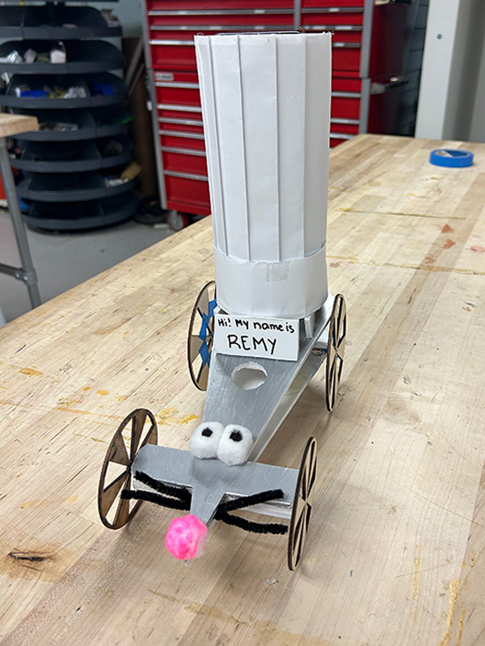

Rover Project
Project Timeline: Fall 2023
Course: Introduction to Mechanical Design - University of Pittsburgh
Overview
This project was completed as part of the Introduction to Mechanical Design class at the
University of Pittsburgh. The challenge was to design and build a rover optimized for both
speed and agility using only a motor and solar panel as primary components.

Design Constraints
- Single motor for propulsion
- Solar panel for power generation
- Optimize for both speed and maneuverability
- Lightweight and durable construction
Design Features
- Custom chassis design for weight optimization
- Efficient power transmission system
- Strategic wheel placement for enhanced agility
- Aerodynamic profile for maximum speed
- Solar panel mounting for optimal energy capture
Engineering Process
- Conceptual Design: Brainstormed multiple configurations and selected optimal approach
- CAD Modeling: Created detailed 3D models for all components
- Prototyping: Built and tested initial designs
- Iteration: Refined design based on performance testing
- Final Build: Constructed optimized rover with improved components
Technologies & Tools
- CAD software for mechanical design
- 3D printing and fabrication techniques
- Basic electronics and motor control
- Performance testing and data analysis
Key Learnings
- Design trade-offs between speed and agility
- Importance of weight distribution in vehicle dynamics
- Power efficiency in solar-powered systems
- Iterative design and rapid prototyping
- Testing and validation methodologies
Results
The final rover design successfully balanced speed and agility requirements, demonstrating
effective mechanical design principles and practical engineering problem-solving skills.